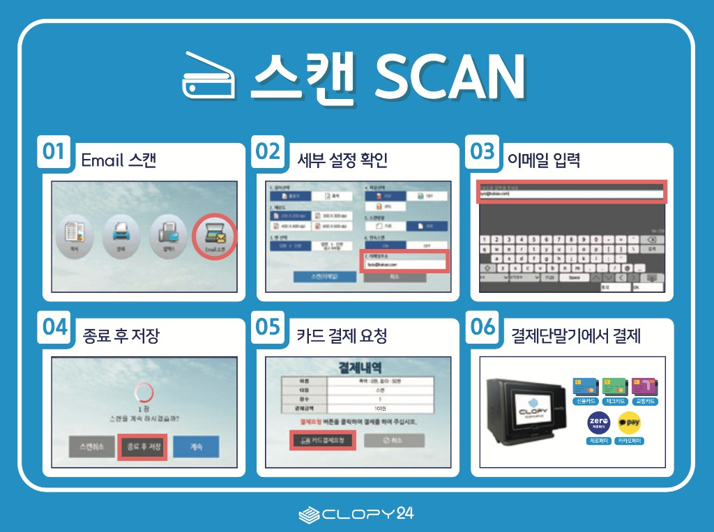
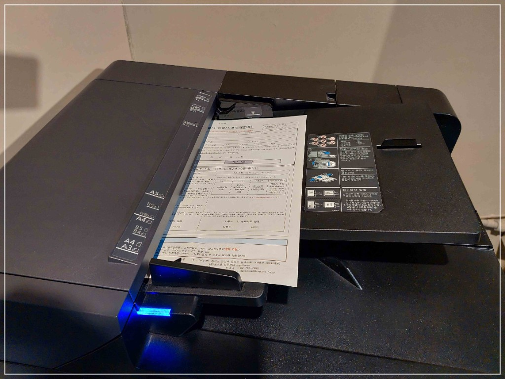
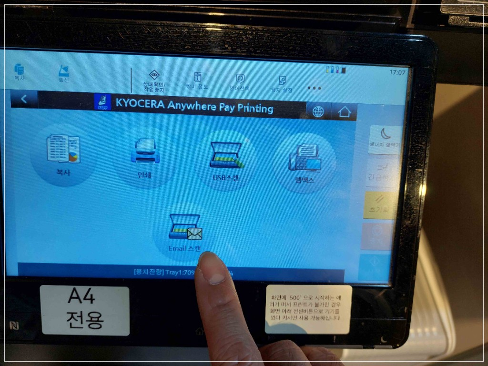
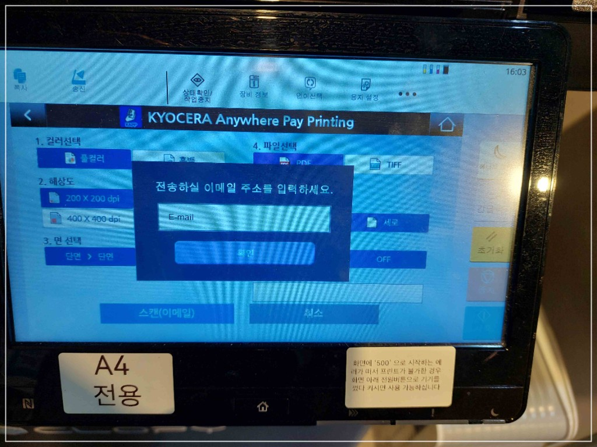
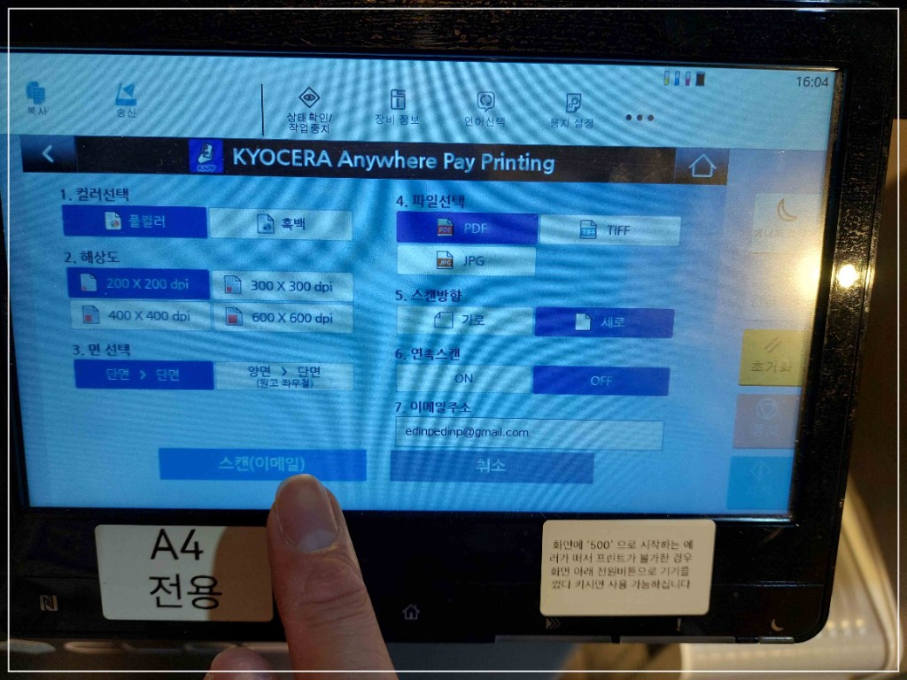
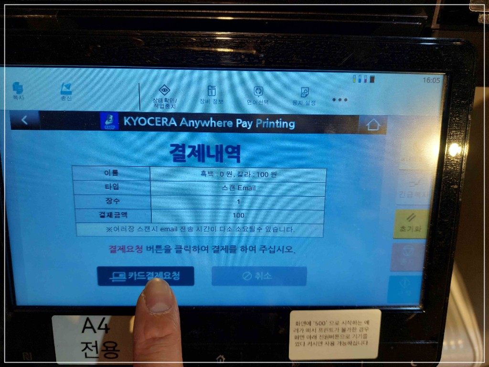
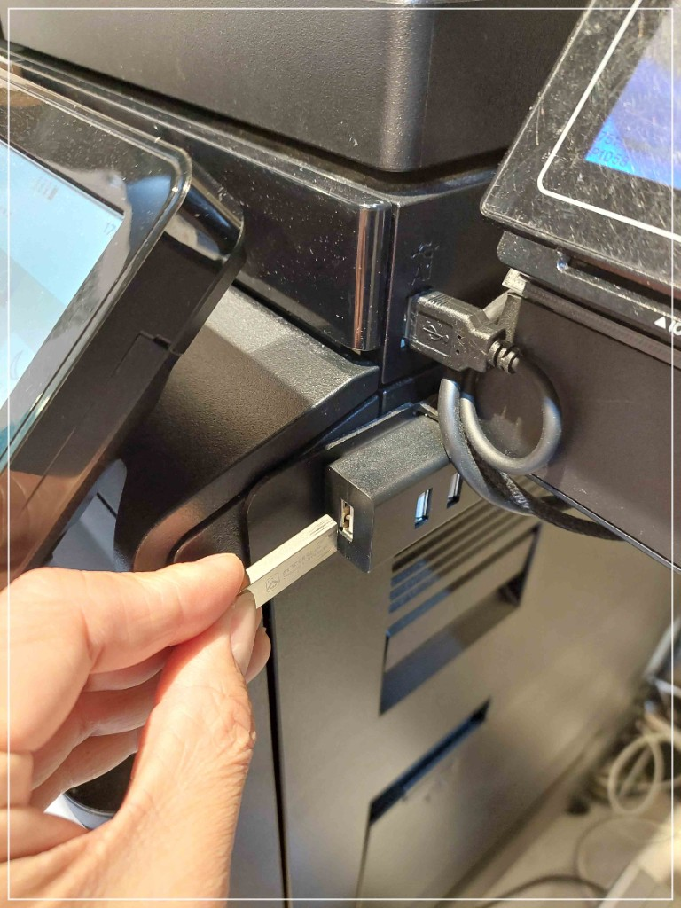
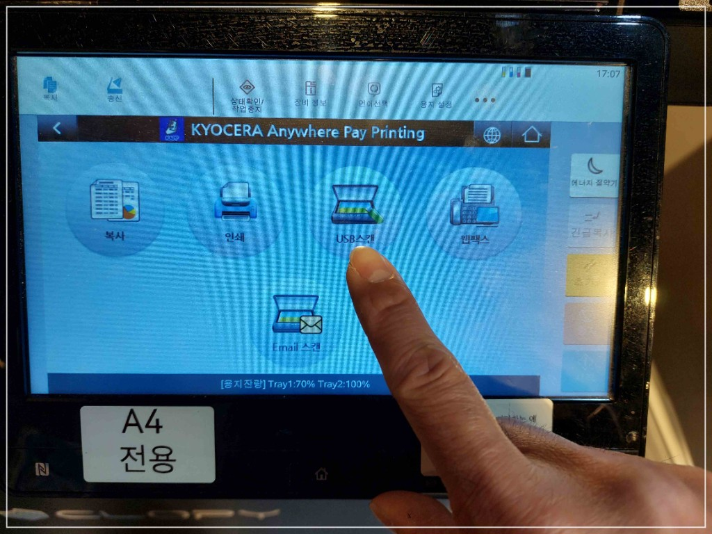
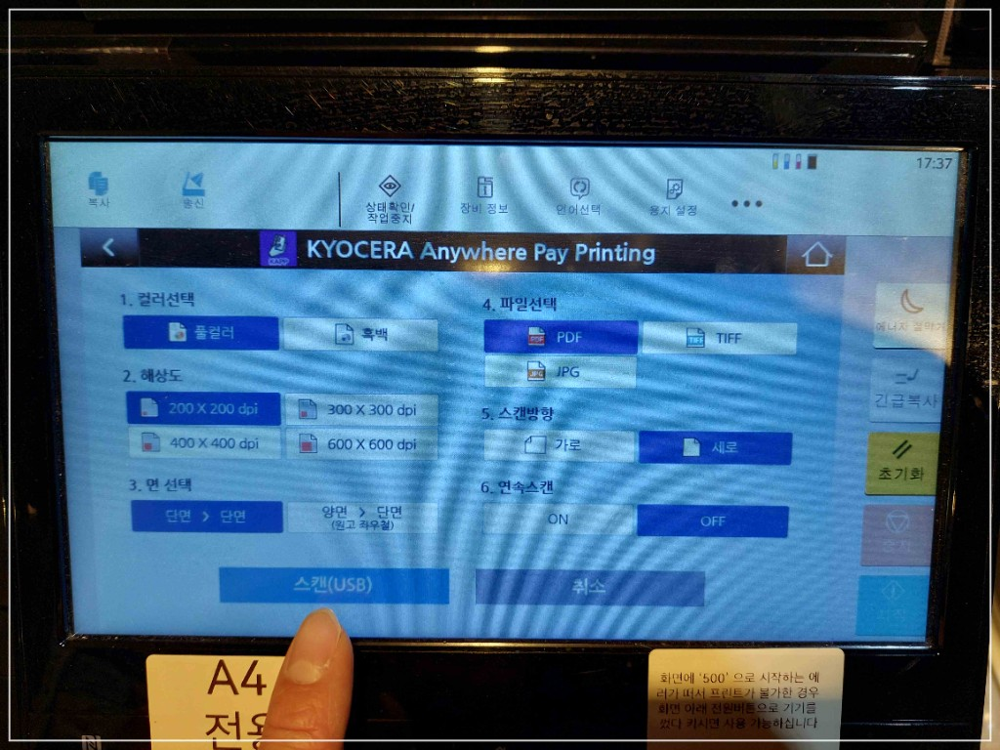

스캔 SCAN
복합기에서 문서를 스캔하는 방법입니다. 이메일 스캔 또는 USB 스캔을 선택해 진행하세요.
📌 이메일 스캔 순서
⚠️ 주의사항
- 이메일 주소를 정확히 적었는지 다시 한 번 확인해주세요.
- 회사 메일 주소는 보안 정책(방화벽)으로 수신이 안 될 수 있고, 일반 메일도 스팸으로 분류될 수 있습니다. 잘 모르시는 경우 테스트로 1장만 먼저 보내 확인하면 손해를 줄일 수 있습니다.

-
1
스캔할 용지를 복합기 상단에 넣어주세요. 호치케스나 이물질이 들어가지 않도록 주의해주세요!

-
2
복합기 화면에서 이메일 스캔을 선택합니다.

-
3
받을 이메일 주소를 입력합니다.

-
4
흑백/컬러, 해상도, 파일형식(PDF/JPG), 단면/양면 등을 설정한 뒤 스캔(이메일) 버튼을 눌러 스캔합니다.

-
5
결제내역이 나오면 카드결제요청을 누르고, 결제 단말기에서 결제합니다.

-
6
스캔이 끝나면 이메일 전송을 확인합니다. (메일 수신까지 시간이 조금 걸릴 수 있어요)
📌 스캔 순서

-
1
스캔할 용지를 복합기 상단에 넣어주세요. 호치케스나 이물질이 들어가지 않도록 주의해주세요!
-
2
복합기 오른쪽 USB 포트에 USB 메모리를 꽂습니다.

-
3
복합기 화면에서 USB 스캔 버튼을 누릅니다.

-
4
흑백/컬러, 해상도, 원본 방향, 파일형식(PDF/JPG), 단면/양면, 연속스캔 등을 선택한 뒤 스캔(USB) 버튼을 눌러 스캔을 시작합니다.

-
5
스캔이 끝나면 '종료 후 저장'을 선택하면 USB에 저장됩니다.
-
6
결제내역이 나오면 카드결제요청 버튼을 누릅니다.
-
7
결제 단말기에서 신용카드, 체크카드, 제로페이, 카카오페이 등으로 결제합니다.